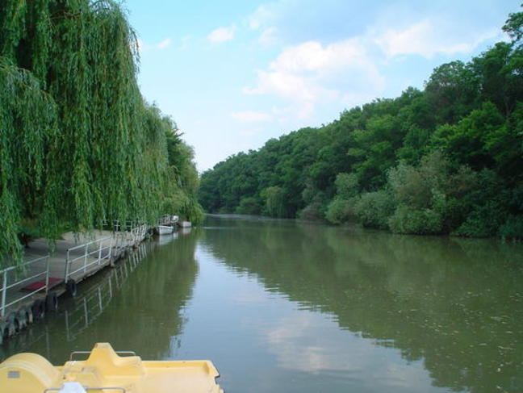

Резерват - Камчия
 „Камчия“ нарича се още Камчийска пахена, е резерват в България. Камчия е обявен за резерват с Постановление от 29 юни 1951 г. на Министерството на горите. Заради важното си природозащитно и екологично значение в периода 1977 – 2017 г. е включен в световната мрежа от биосферни резервати като част от програмата „Човек и биосфера“ на ЮНЕСКО за опазване на най-представителните екосистеми на планетата. Целта е запазването на лонгозните гори по долното течение на река Камчия.
Намира се в долното течение на река Камчия (в местността Камчийски пясъци) землищата на общините Аврен и Долни чифлик. Резерватът се намира на около 25 km южно от град Варна, в близост до курортите Камчия и Шкорпиловци. Включва блатата Лесински азмак с площ около 2 km² и Мазния азмак с площ 1,4 km², които са останки от стари речни ръкави, естествено свързани с реката. В тях се срещат бяла и жълта водна лилия. А също така и блатото Камчийска (Венелинова) балта с площ площ 1,23 km² и Карабурунското (Крушевското) блато, което е превърнато в рибарници с площ 1,5 km².
Гората е наречена лонгоз и целта на резервата е да се запази нейният естествен вид. Гората на места достига до 50 метра височина. В лонгозната гора се срещат около 40 вида дървета: летен дъб, елша, бяла топола, дива круша, върба, мъждрян и др., но преобладават полски бряст и ясен. Голяма част от дърветата са на възраст над 150 години и с височина над 35 метра. Храстите са представени от червена къпина, глог, шипка, дрян, леска и др. От особено голямо значение са и лианите, които образуват завеса на по-влажните места. Те са представени от скрепка, дива лоза, имел и др. На територията на резервата се намира едно от най-големите находища на блатно кокиче в България. В реката се срещат лилии и други водолюбиви растения.
Предложения за хотели в Резерват Камчия.